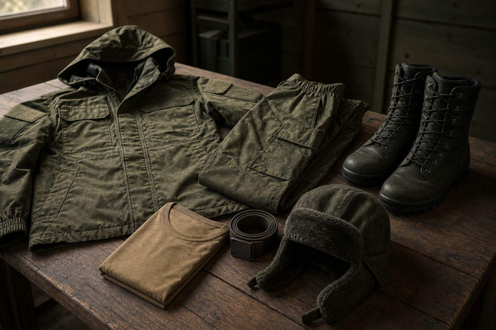
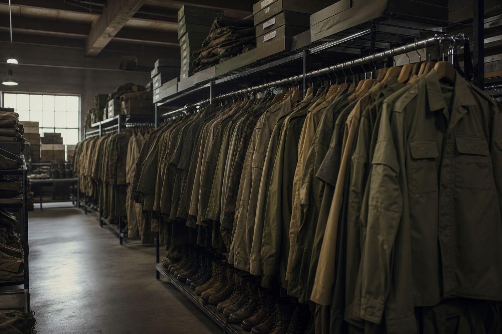
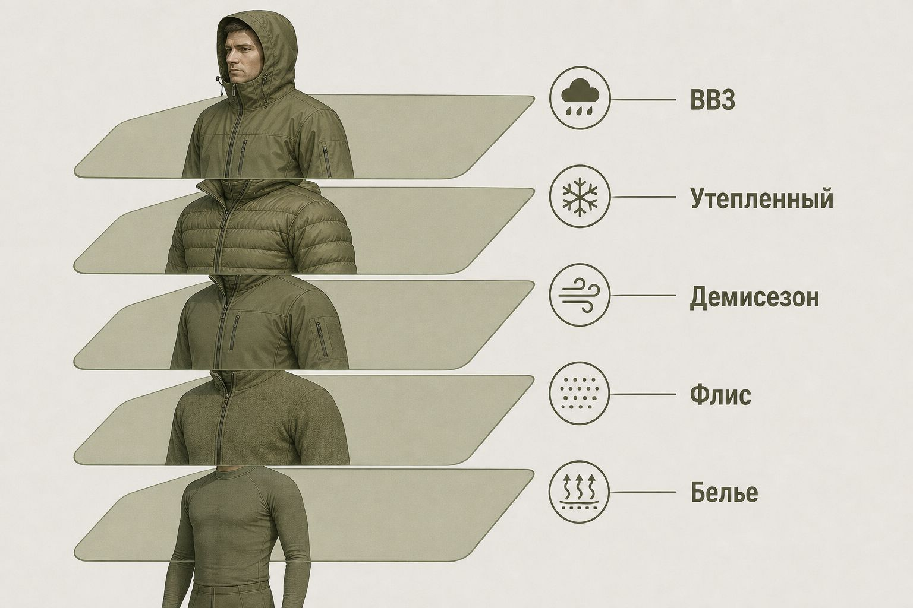
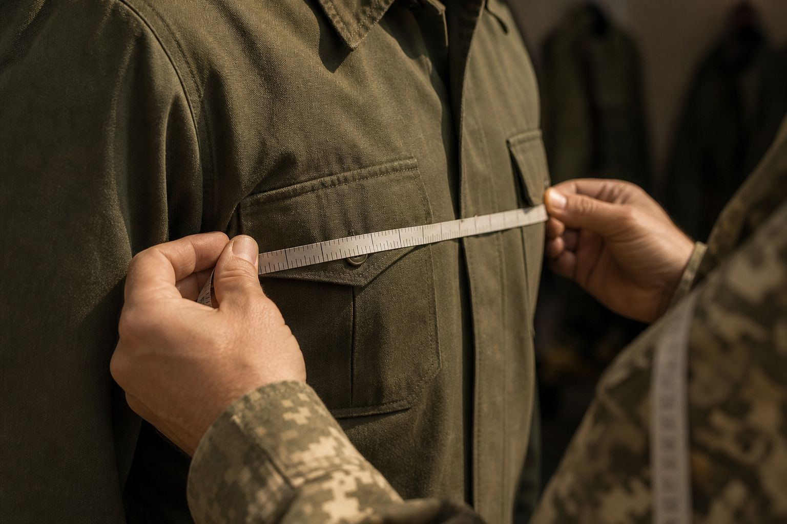
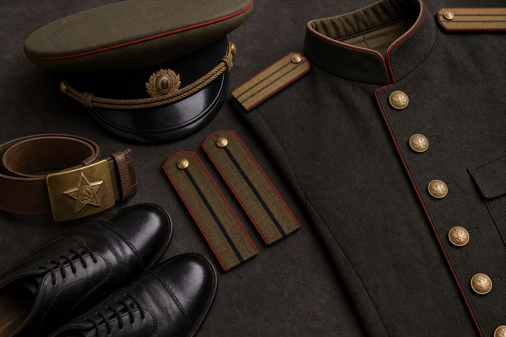

Вещевая служба Вооружённых Сил Российской Федерации
Полный обзор системы вещевого обеспечения: законодательство, структура, нормы снабжения, сроки носки, размерные сетки, ВКПО, компенсации и банно-прачечное обслуживание.
Навигация: стрелки клавиатуры · пробел · кнопки внизу

Содержание презентации
Что такое вещевое обеспечение
Вещевое обеспечение — вид материального обеспечения ВС РФ: определение потребности, снабжение, хранение, носка, ремонт, утилизация имущества и банно-прачечное обслуживание личного состава.
Цель
Создать условия для боевой и специальной подготовки: обеспечить военнослужащего одеждой, обувью, бельём, снаряжением и знаками различия.
Место в системе
Составная часть тылового обеспечения. Работает напрямую с личным составом — от примерки до замены и стирки.

Состав имущества вещевой службы
Вещевое имущество
- Военная форма одежды и знаки различия
- Бельё, постельные принадлежности
- Специальное и санитарно-хозяйственное имущество
- Палатки, брезенты, мягкие контейнеры
- Спортивное и альпинистское имущество
- Ткани и расходные материалы
Технические средства
- Средства стирки и химчистки
- Оборудование ремонта одежды и обуви
- Полевые бани и прачечные
- Банно-прачечные дезинфекционные поезда
- Передвижные комплексы бытового обслуживания
Категории годности
- 1-я — новое имущество
- 2-я — бывшее в употреблении, срок не истёк / годное после ремонта
- 3-я — негодное, подлежит списанию
Учёт обеспеченности включает новое и бывшее в употреблении имущество с неистёкшим сроком носки.
Структура вещевой службы
Органы и объекты
- Центральные, окружные и флотские вещевые базы и склады
- Комбинаты ремонта, банно-прачечные комбинаты
- 762 ЦОКБ и производственные предприятия
- Кафедры подготовки специалистов тыла
Основные задачи (мирное время)
- Снабжение имуществом и техсредствами
- Создание и хранение запасов
- Банно-прачечное обслуживание
- Ремонт и химчистка
- Учёт, отчётность и контроль расхода
Ключевое законодательство
Гарантирует продовольственное и вещевое обеспечение; для ряда категорий контрактников — право на денежную компенсацию вместо предметов личного пользования.
Нормы снабжения вещевым имуществом в мирное время и правила получения денежной компенсации. Активно обновлялось в 2025 году (ПП № 1059 и № 1116).
Главный «рабочий» документ ВС РФ: порядок обеспечения, нормы содержания, спецнормы, запасы, банно-прачечное обслуживание. Ред. от 27.06.2024.
Регламентирует внешний вид, комплекты парадной, повседневной и полевой формы, знаки различия и правила ношения.
Структура приказа № 500
Приложения
- Прил. 1 — Порядок обеспечения вещевым имуществом
- Прил. 2 — Нормы переходящих и страховых запасов
- Прил. 3 — Нормы содержания на одного военнослужащего
- Прил. 4 — Спецнормы № 1–45 (от Арктики до прачечных)
- Прил. 5 — Ведомственная охрана МО
- Прил. 6 — Обеспечение на военных сборах
- Прил. 7 — Имущество, остающееся призывнику при увольнении
Что фиксирует Порядок
- Зачисление на вещевое обеспечение
- Выдача, замена, учёт в карточке довольствия
- Особенности для контрактников и призывников
- Выдача ВКПО по категориям
- Сдача инвентаря при переводе/увольнении
- Порядок ремонта и списания
Личное пользование и инвентарь
Имущество личного пользования
Закрепляется за конкретным военнослужащим: форма, бельё, обувь и т. п.
- Контрактники: с момента получения — их собственность
- Призывники: преимущественно учёт с возвратом; отдельные предметы переходят в собственность при увольнении (Прил. 7 к пр. № 500)
- Выдача фиксируется в карточке вещевого довольствия
Инвентарное имущество
Имущество подразделения: возвращается на склад.
- Палатки, плащ-накидки, постовая одежда
- Спальные принадлежности
- Спецснаряжение (холод, горы, море, дежурство)
- Спортивное и альпинистское имущество
- Замена спецпредметов — как правило, после сдачи изношенных
ВКПО — всесезонный комплект полевого обмундирования
Многослойная система, позволяющая комбинировать элементы под климат и задачу. Выдаётся по категориям (офицеры/прапорщики; сержанты/солдаты) согласно Порядку из Прил. 1 к приказу № 500.

Особенности выдачи ВКПО
Контракт (испытательный срок)
На период испытания старшинам, сержантам и солдатам выдаются сезонные предметы ВКПО 2-й категории, в том числе:
- Фуражка летняя / шапка-ушанка утеплённая
- Куртка и брюки утеплённые
- Костюм летний / демисезонный
- Футболка, трусы / бельё нательное
- Ботинки с высокими берцами для низких температур
- ВВЗ — весной-летом; рукавицы и шарф — осенью-зимой
Берцы и перчатки полушерстяные — как правило, 1-й категории.
Призывники
- По прибытии из сборных пунктов — ВКПО 2-й категории (с исключениями по летним предметам)
- При отсутствии — допускается 1-я категория
- При переводе в другую часть инвентарь и ВКПО сдаются на склад
- Отдельные предметы (в т. ч. берцы для низких температур) могут сопровождаться записью в аттестате
Сроки носки: типовые ориентиры
Конкретный набор зависит от категории, рода войск и климата. Ниже — практические ориентиры по приказу № 500 / разъясняющим материалам и классическим нормам снабжения.
| Предмет | Количество | Срок носки | Примечание |
|---|---|---|---|
| Футболка | до 2–3 шт. | 1–2 года | Зависит от нормы и категории |
| Носки / портянки летние | до 3–6 пар | 1 год | Высокий расходный предмет |
| Носки шерстяные | 1–2 пары | 1 год | Зимний комплект |
| Ботинки с высокими берцами | 1 пара | 2–3 года | У солдат/сержантов чаще короче, чем у офицеров |
| Полуботинки / полусапоги | 1 пара | 1–3 года | По норме категории |
| Ремень поясной / брючный | по 1 шт. | 3–5 лет | Инвентарный срок длительный |
| Костюм утеплённый | 1 комплект | базовый срок ± климат | Холод: −1 год; жара: +1 год |
| Плащ-накидка / баул | 1 шт. | до 10 лет | Часто инвентарь / долгий срок |
| Шапка зимняя (особ. холод) | 1 шт. | 4 года | Норма № 1 спец. имущества, оф./пр. |
| Балаклава | 1 шт. | 5 лет | Норма № 1 (особо холодный климат) |
| Рукавицы утеплённые | 1 пара | 5 лет | Норма № 1 |
| Бельё влагоотводящее (контракт) | 2 компл. | 1 год | Сержанты/солдаты по контракту |
Климат и корректировка сроков
Особо холодный / холодный
Срок носки утеплённого костюма уменьшается на 1 год. Действуют спецнормы (Норма № 1): зимняя шапка, балаклава, рукавицы, баул и др.
Умеренный
Базовые сроки носки, указанные в нормах снабжения, применяются без климатической корректировки утеплённого комплекта.
Жаркий климат
Срок утеплённого костюма увеличивается на 1 год. По ряду норм выдаётся облегчённый комплект: панама/фуражка, летний костюм, футболка, носки, ремень, облегчённые берцы.
Высокогорье
При командировании в районы ≥ 1500 м и в зоны со средней температурой холодного периода ниже −10 °C — шапка полушерстяная, утеплённый костюм, утеплённые берцы.
Арктика / Антарктика
В срок носки отдельных предметов засчитывается время фактического нахождения в экспедициях.
Размерная сетка одежды ВКПО
Маркировка вида 50/4 = размер 50 (обхват груди) + рост 4. Подбор — по наибольшему из измерений.
| Размер | Обхват груди, см | Обхват талии, см | Обхват бёдер, см |
|---|---|---|---|
| 44 | 88 (86–90) | 78 (76–80) | 90 (89–91) |
| 46 | 92 (90–94) | 82 (80–84) | 92 (91–94) |
| 48 | 96 (94–98) | 86 (84–88) | 98 (94–100) |
| 50 | 100 (98–102) | 90 (88–92) | 102 (100–104) |
| 52 | 104 (102–106) | 94 (92–96) | 106 (104–108) |
| 54 | 108 (106–110) | 98 (96–100) | 110 (108–112) |
| 56 | 112 (110–114) | 104 (100–106) | 115 (112–117) |
| 58 | 116 (114–118) | 110 (106–112) | 120 (117–122) |
| 60 | 120 (118–122) | 116 (112–118) | 125 (122–127) |
| 62 | 124 (122–126) | 122 (118–124) | 130 (127–132) |
Ростовки и размер обуви
| Рост | Точный, см | Интервал, см | Сдвоенный |
|---|---|---|---|
| 1 | 158 | 155,1–161,0 | 1–2 |
| 2 | 164 | 161,1–167,1 | |
| 3 | 170 | 167,1–173,0 | 3–4 |
| 4 | 176 | 173,1–179,0 | |
| 5 | 182 | 179,1–185,0 | 5–6 |
| 6 | 188 | 185,1–191,0 | |
| 7 | 194 | 191,1–197,0 | 7–8 |
| 8 | 200 | 197,1–203,0 |

Обувь
- Летние / демисезонные берцы — соответствуют обычному российскому размеру
- Зимние берцы — часто маломерят: берут на размер больше
- Туфли и полусапоги ориентируют по размеру летних берцев
- Пример: лето 44 → зима часто 45
Специальные нормы снабжения
| Норма | Кому / для чего | Характер |
|---|---|---|
| № 1 | Местности с особо холодным климатом | Инвентарь |
| № 2 | Боевое дежурство / пункты управления | Инвентарь |
| № 8 | Прыжки с парашютом | Инвентарь |
| № 9–11 | ВМФ, гидрография, аварийно-спасательные работы | Инвентарь |
| № 12 | Постовая одежда | Инвентарь |
| № 15–17 | Радиация, спецбоеприпасы, пожарные | Инвентарь |
| № 20 | Эксплуатация ВВТ (техническая одежда) | Инвентарь |
| № 21–25 | Медорганизации, санатории, родильные, станции крови | Сан.-хоз. |
| № 28 | Заграница / жаркий климат | Инвентарь |
| № 30 | Альпинистское имущество | Инвентарь |
| № 32 | Спортивное имущество | Инвентарь |
| № 34 | Силы специальных операций | Инвентарь |
| № 36–37 | Палатки, брезенты, мягкие контейнеры | Инвентарь |
| № 41–44 | Прачечное оборудование, ремонт, моющие | Расход / техника |
Виды военной формы одежды
Парадная
Торжественные мероприятия, парады, почётный караул. Отдельная норма № 33 — специальная церемониальная форма почётного караула.
Повседневная
Служба в пункте постоянной дислокации, штабы, строевые мероприятия вне поля. Комплекты различаются по сезонам и видам ВС.
Полевая (ВКПО)
Боевая подготовка, учения, выполнение задач в поле. Камуфлированная расцветка, многослойность, совместимость со снаряжением.
Особый порядок
ВМФ (тельняшка, бескозырка, фланелевка), ВДВ, лётный состав, творческие коллективы и оркестры — отдельные нормы и комплекты.

Банно-прачечное обслуживание
Задачи
- Помывка личного состава
- Стирка нательного и постельного белья
- Химическая чистка формы
- Дезинфекция имущества
Силы и средства
- Стационарные бани и прачечные
- Полевые банно-прачечные пункты
- БПДП (дезинфекционные поезда)
- Нормы № 41–44 на оборудование и расходники
Расходные материалы
Мыло, мочалки, туалетная бумага — отдельная категория расходных материалов вещевой службы. Нормы расхода моющих — Норма № 44.
Денежная компенсация вместо вещевого
Кому доступно
Отдельным категориям военнослужащих по контракту — вместо предметов вещевого имущества личного пользования, если это прямо предусмотрено Правилами к ПП № 390.
- Как правило — после истечения срока носки
- При увольнении — за неполученные предметы (в установленных случаях)
- Размеры утверждаются распоряжениями Правительства (в т. ч. таблицы по нормам)
Алгоритм на практике
- 1. Рапорт на имя командира
- 2. Справка вещевой службы (что не получено / сроки истекли)
- 3. Резолюция командира
- 4. Выплата финансовой службой
Изменения 2025 года
ПП РФ № 1059 от 14.07.2025
Внесены изменения в ПП № 390. Часть предметов по нормам снабжения — приостановка выдачи (ориентир — до 1 января 2030 г. по отдельным позициям).
ПП РФ № 1116 от 28.07.2025
Дополнительные правки к ПП № 390: приостановка выдачи ряда предметов (в т. ч. отдельных головных уборов по нормам) до 31 декабря 2030 г.
Что это значит на практике
- Нормы формально сохраняются, но выдача отдельных позиций может быть временно приостановлена
- Возможны корректировки порядка компенсации по предметам, срок которых не истёк
- Локальный порядок выдачи уточняется вещевой службой части по текущим нарядам и доведениям
Как получить обеспечение
01 · Прибытие
Примерка, снятие мерок, первичный комплект по норме. Запись в карточку вещевого довольствия.
02 · Носка
Эксплуатация по назначению. Досрочный износ по службе — акт. Обмен по истечении срока.
03 · Инвентарь
Полевое и специмущество — на подразделение. Возврат на склад обязателен.
04 · Компенсация
При праве — рапорт → справка вещслужбы → выплата финслужбой.
Обязанность контрактника
По истечении срока носки прибыть на вещевой склад (или в ателье) для получения положенного имущества / оформления индивидуального пошива и примерок.
Без аттестата
Прибывшему контрактнику без аттестата сначала выдают только инвентарь; зачисление на личное вещевое — после приказа командира и (при необходимости) адм. расследования.
Учёт, запасы и категории
Переходящие запасы
Прил. 2 к приказу № 500 — нормы переходящих и страховых запасов вещевого имущества и моющих материалов в соединениях, частях и организациях.
Нормы содержания
Прил. 3 — сколько имущества должно содержаться на одного военнослужащего (и на штатную койку в медорганизациях).
Обеспеченность
В зачёт идёт новое + бывшее в употреблении с неистёкшим сроком + годный инвентарь даже после формального истечения срока.
Ответственность и типовые ситуации
Материальная ответственность
- Умышленная порча или утрата — взыскание в установленном порядке
- Инвентарь подлежит возврату; недостача фиксируется актом
- Преждевременный износ по вине службы оформляется отдельно от виновной утраты
Типовые вопросы
- Не выдали вовремя? Рапорт командиру + проверка карточки
- Что положено? Норма по категории + климат + спецнорма должности
- Можно ли деньги? Только если категория прямо предусмотрена ПП № 390
- Перевод? Инвентарь и часть ВКПО сдаются; в аттестате — остатки
Памятка военнослужащему
Знать свою норму
Категория службы, климатическая зона, спецнорма должности и актуальные приостановки выдачи 2025–2030.
Следить за сроками
Карточка вещевого довольствия — основной документ. Обмен не «обнуляет» оставшийся срок одноимённого предмета некорректно.
Правильно подбирать размер
Грудь / талия / бёдра / рост. Зимние берцы — часто на размер больше. Комплект берут по наибольшему измерению.
Источники и правовая база
Основные акты
- ФЗ от 27.05.1998 № 76-ФЗ «О статусе военнослужащих», ст. 14
- Положение о вещевом обеспечении военнослужащих (ПП РФ)
- ПП РФ от 22.06.2006 № 390 (с изм. 2025 г.)
- ПП РФ от 14.07.2025 № 1059; от 28.07.2025 № 1116
- Приказ МО РФ от 14.08.2017 № 500 (ред. 27.06.2024)
- Приказ МО РФ о правилах ношения военной формы одежды (№ 300)
Оговорка
Презентация носит справочно-образовательный характер и обобщает открытые положения нормативных актов. Конкретная выдача определяется актуальной редакцией документов, локальными доведениями и карточкой вещевого довольствия воинской части.
Вещевая служба ВС РФ — обеспечение готовности через быт, форму и снаряжение.